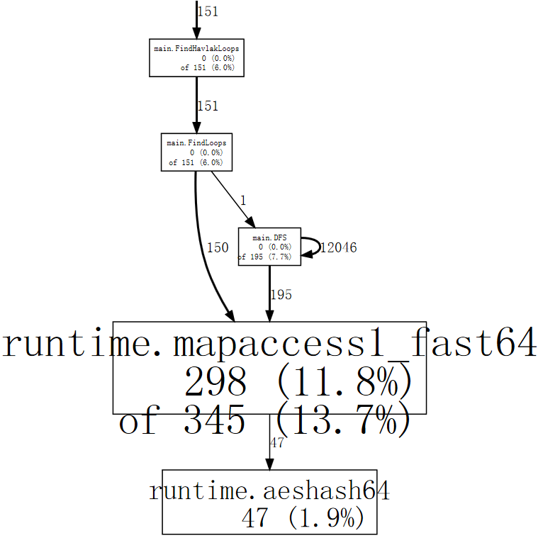
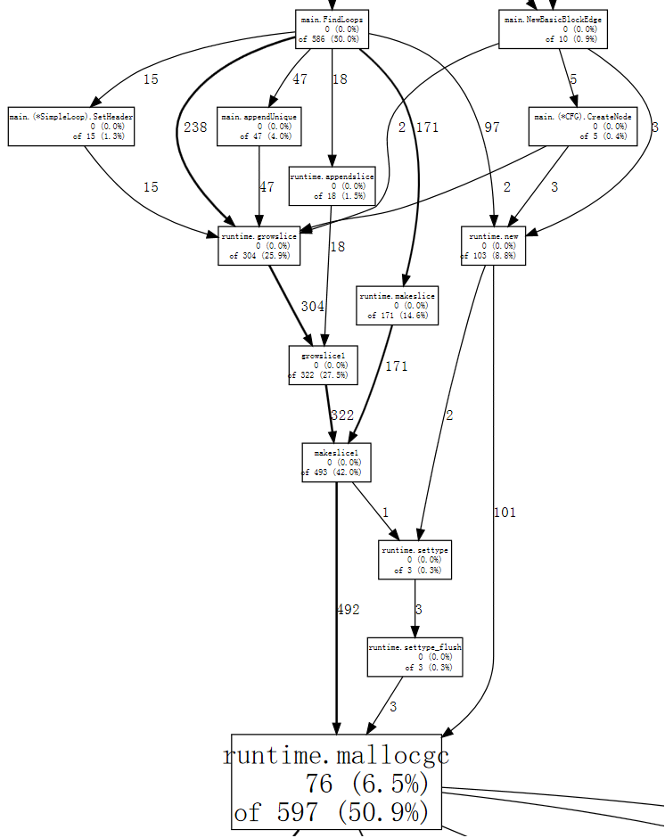
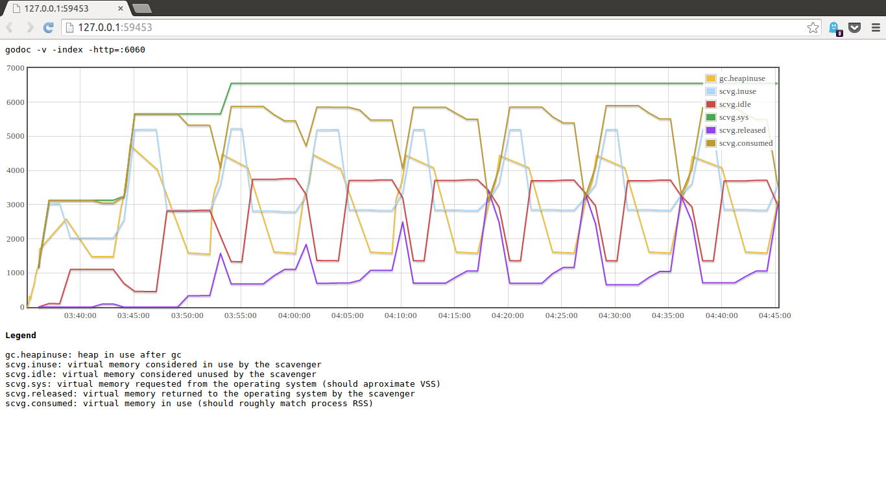

目录 [−]
本章重点介绍Go程序的调试和性能监控。
GDB
当你在Linux、macOS、FreeBSD、NetBSD环境中使用gc工具链编译和链接你的程序的时候，生成的二进制文件中包含 DWARFv3调试信息, 最新的GDB(>7.1)可以用它们来调试程序。
gc工具链的名字来自Go前端编译器(compiler frontend), cmd/gc,以区分gccgo工具链。当人们谈论Go编译器的时候，通常所指就是gc工具链。
gc工具链包含一个Go编译器、一个C编译器、一个汇编工具和一个链接工具，所有这些工具都可以在src\cmd文件夹下找到，比如5g、6g、｀8g｀、5c、6c、8c、5a、6a、8a、5l、6l、8l等。
自Go 1.5 gc工具链改变了，从C的实现改变成Go的实现，所以你在Go1.5以上的版本中找不到这些工具，而是由统一的compile、link工具所取代。 你编译的时候可以看到工具链是如何工作的：
smallnestMBP:ch10 smallnest$ go build -x -gcflags "-N -l" pi.go WORK=/var/folders/lv/5kl1rvvj2jsfqxyw_1_pvw380000gn/T/go-build974068189 mkdir -p $WORK/command-line-arguments/_obj/ mkdir -p $WORK/command-line-arguments/_obj/exe/ cd /Users/smallnest/go/src/github.com/smallnest/dive-into-go/ch10 /usr/local/go/pkg/tool/darwin_amd64/compile -o $WORK/command-line-arguments.a -trimpath $WORK -N -l -p main -complete -buildid ab0109c737108c5646adfbf53bff79b7a49b96d4 -D _/Users/smallnest/go/src/github.com/smallnest/dive-into-go/ch10 -I $WORK -pack ./pi.go cd . /usr/local/go/pkg/tool/darwin_amd64/link -o $WORK/command-line-arguments/_obj/exe/a.out -L $WORK -extld=clang -buildmode=exe -buildid=ab0109c737108c5646adfbf53bff79b7a49b96d4 $WORK/command-line-arguments.a mv $WORK/command-line-arguments/_obj/exe/a.out pi
The suites of programs that were the compilers (6g, 8g, etc.), the assemblers (6a, 8a, etc.), and the linkers (6l, 8l, etc.) have each been consolidated into a single tool that is configured by the environment variables GOOS and GOARCH. The old names are gone; the new tools are available through the go tool mechanism as go tool compile, go tool asm, and go tool link. Also, the file suffixes .6, .8, etc. for the intermediate object files are also gone; now they are just plain .o files.
For example, to build and link a program on amd64 for Darwin using the tools directly, rather than through go build, one would run:
$ export GOOS=darwin GOARCH=amd64 $ go tool compile program.go $ go tool link program.o
-w参数会告诉连接器忽略这些调试信息(go build -ldflags "-w" example.go)。
gc编译器可能会做优化，比如inline函数，这会让gdb调试更加困难。如果不想让编译器做这些优化可以指定参数-gcflags "-N -l":
|
|
GDB具体的执行命令你可以搜索相关的文档，网络上有居多的文章介绍。
以计算圆周率 Pi 的代码为例，在macOS中你需要执行 sudo gdb pi,然后进入GDB的控制台。
list可以显示源代码。
break加断点，比如break 16。
bt 、frame n可以显示调用栈信息。
info显示变量的信息：
(gdb) next 17 go term(ch, float64(k)) (gdb) info args n = 5000 ~r1 = 0 (gdb) info locals k = 0 k = 16 f = 4.3922040662770145e-318 ch = 0xc820066000 (gdb) p ch $1 = (chan float64) 0xc820066000
基本上，如果你熟悉gdb工具，可以轻松地进行调试，还可以使用扩展脚本对复杂类型进行检查。
参考
- https://golang.org/doc/gdb
- https://astaxie.gitbooks.io/build-web-application-with-golang/content/en/11.2.html
- https://lincolnloop.com/blog/introduction-go-debugging-gdb/
- https://blog.codeship.com/using-gdb-debugger-with-go/
- http://dave.cheney.net/2013/10/15/how-does-the-go-build-command-work
- https://github.com/golang/go/wiki/GcToolchainTricks
- https://github.com/golang/go/wiki/GcToolchainTricks
delve及IDE集成调试
虽然gdb工具很强大，但是这种基于命令行的调试方式确实不方便，而且它也不是专门为Go语言提供的调试工具，尤其对于并发程序的调试。
但是G官方一直没有提供一个Go调试器。
幸运地是，有人提供了专门针对 Go语言的调试器：
网址： https://github.com/derekparker/delve
虽然当前delve的版本还是pre 1.0，但是已经提供了很好的Go调试的功能，并且可以很好的Intellj、Atom、Vscode等Go IDE工具集成。
当然你可以用命令行的方式调试,它有多种方式启动dlv： dlv attach、dlv debug、dlv exec、dlv test、dlv trace等，用来调试一个进程或者程序等。我们用dlv exec ./pi调试刚才编译好的程序。
|
|
它的信息要比gdb的详细，更适合Go程序的调试。
以下IDE工具可以集成delve。
关于vscode IDE,你可以参考: 使用visual studio code开发Go程序 。

参考
- https://github.com/derekparker/delve
- https://github.com/derekparker/delve/tree/master/Documentation
- https://blog.gopheracademy.com/advent-2015/debugging-with-delve/
- http://blog.ralch.com/tutorial/golang-debug-with-delve/
- https://github.com/joefitzgerald/go-plus
- https://atom.io/packages/go-debug
- https://code.visualstudio.com/
- https://www.reddit.com/r/golang/comments/3jyfvd/go_plugin_for_intellij_ides_now_has_delve/
- https://github.com/go-lang-plugin-org/go-lang-idea-plugin
- https://github.com/DisposaBoy/GoSublime
- https://github.com/fatih/vim-go
- https://github.com/golang/go/wiki/IDEsAndTextEditorPlugins
pprof
Go官方库提供了两个类似的包pprof,分别为HTTP应用和通用应用提供了性能监控的功能。我们先看看 "runtime/pprof"包的使用，正好Go项目组有一个使用的例子，而且他们专门写了一篇文章介绍： profiling go programs:
2011年的Scala Days会议上，Robert Hundt介绍了论文: Loop Recognition in C++/Java/Go/Scala,这个文章中的Go程序运行的非常慢。
Go项目组正好利用Go profiling tool查找程序的瓶颈。他们选择了一个开发环境，测试C++和Go程序，发现C++程序用了17.8秒，内存使用700M,而Go称许用了25.2秒，内存占用1302M,所以他们尝试使用go tool pprof查找原因。
首先输入runtime/pprof,并使用两个参数-cpuprofile和-memprofile:
|
|
程序启动的时候启动CPU性能监控http://golang.org/pkg/runtime/pprof/#StopCPUProfile，这样才能将缓存的监控数据写入都文件中。
执行程序，执行完后用go tool pprof工具分析性能数据。
|
|
go tool pprof是 Google's pprof C++ profiler 的变种。最重要的命令就是topN,它显示top N的采样结果:
|
|
当监控的时候(profiling),Go程序每0.01秒采样一次，每次采样会记录当前执行的goroutine的程序计数器。上例中共2525次采样，所以它运行了大约25秒。 （注意go tool pprof执行的时候需要程序和采样数据，无果没有指定程序，则不会出现上面的结果）。如果程序执行太快，还没来得及采样，则无法分析其数据。
我们也可以分析一下上一节的Pi程序go tool pprof pi pi.prof:
|
|
前两列显示采样中函数正在执行的次数和百分比（不包含等待函数调用返回的值），数值越大函数执行的频率越大。第三列显示的是前面的数值在整个列表中总数的百分比，Go team的例子中前三行的占比已经达到了32.4%。第4列、第5列显示正在运行和等待的函数出现的数量和占比，虽然函数main.FindLoops运行的次数才占10.6%,但是它确出现在84.1％采样的调用堆栈上(call stack)。
如果要按照第4列第5列排序，可以(pprof) top5 -cum :
|
|
事实上main.FindLoops和main.main的占比应该是100%，但是由于每次采样只分析最底部的100个栈帧(stack frame)，大于四分之一的采样中，main.DFS递归调用的太深，超过了100帧，所有有些没有计数。
起始，性能数据中还包含更有趣的函数调用关系。
使用命令 web 可以产生SVG图形，用一个浏览器就能打开它，不过需要你的机器安装graphviz: (pprof) web

图形中的每个方框代表一个函数，方框的大小代表函数运行的采样数据大小。箭头x指向Y表示X调用Y,箭头指向自身表示递归调用。箭头上的数量代表一次采样中的调用次数。
从图中可以看出，程序花费了很多的时间在hash值的计算上，使用go map对象。我们可以让web只显示特定函数的采样，比如runtime.mapaccess1_fast64: (pprof) web mapaccess1。

好了，我们知道了性能的大概情况以及哪个函数占的时间太多，现在通过list命令查看函数：
|
|
前三列分别代表程序运行都此的采样数、运行到此或者在此调用的采样数、代码行数。
前面已经知道性能出现在map查找的实现上，我们重点分析第二列。时间很多花费在第247行。除了这个递归调用，其它时间花费较高的是 242、246和250行。分析得知map对于一些特殊的查找并不总是有效，所以我们可以用[]int代替map [*BasicBlock]int，根据索引查找更有效。
Go team根据分析修改了代码实现，再一次运行测试，果然有效。
整个源代码在 google code 上可以下载，你可以测试演练一把。
测试修改后的结果：
|
|
main.DFS不再出现在前几个占用时间较多的函数列表中，但是内存分配和垃圾回收占用确很多。使用-memprofile参数监控内存：
|
|
执行程序，得到内存采样数据：
|
|
使用go tool pprof分析采样数据：
|
|
FindLoops函数分配了大约56.3M内存，占总分配内存82.4M的68.4%。CreateNode分配了17.6M的内存。
list FindLoop可以显示函数的详细的内存分配：
|
|
问题出在第28行，还是map对象。
如果我们使用--inuse_objects参数,它将显示分配的对象数量而不是大小：
|
|
原因map会保存一个键值对，太浪费空间，可以用一个slice代替，当然程序逻辑要求要保存一个不重复的对象，所以我们可以提供一个辅助方法：
|
|
测试内存和CPU都比最开始的程序要好很多。
web 命令也可以显示内存分配和垃圾回收的占比图(pprof) web mallocgc：

如果你觉得图中太多节点不好分析，可以忽略占比小于 10%的节点：
|
|
这节上面的分析翻译自Go的官方文档。我觉得官方的这篇文档很详细，很好的演示了如何对一个性能有问题的命令行程序进行代码分析。
除了上面的两个profile,Go还提供了heap profile、block profile、trace信息。
如果你正在开发HTTP程序，你可以使用net/http/pprof包来得到这些监控数据。
在包引入时增加：
|
|
它会增加一些handler在/debug/pprof/下。你可以直接运行go tool pprof访问这些链接:
|
|
你可以访问http://localhost:6060/debug/pprof查看这些profile。
可以看一下这些profile handler如何配置的：
|
|
可以看到它们设置在缺省的Mux上。所以如果你使用自己的Mux，或者使用第三方的框架，你可以模仿这个实现自己添建，甚至加上访问权限的控制。
具体可以看一个Profile方法的实现:
|
|
可见它会暂停n秒取得采样数据后才完全返回给客户端。
参考
- https://golang.org/pkg/net/http/pprof/
- https://golang.org/pkg/runtime/pprof/
- https://blog.golang.org/profiling-go-programs
- https://github.com/gperftools/gperftools
- http://saml.rilspace.org/profiling-and-creating-call-graphs-for-go-programs-with-go-tool-pprof
- http://stackoverflow.com/questions/30871691/cant-get-golang-pprof-working
- https://signalfx.com/blog/a-pattern-for-optimizing-go-2/
- http://blog.ralch.com/tutorial/golang-performance-and-memory-analysis/
benchmark测试
Go提供了benchmark的通用解决方案，但我不准备在本文中介绍了，而是和Go测试技术放在一起介绍。
Go 测试技术一文会介绍官方的测试方法、benchmark的测试方法，示例代码的编写，文档的生成等。
在这里需要提到的是go test提供了生成这些profile数据的参数cpuprofile、``memprofile等，所以很容易的分析测试时的性能的问题。
Go调试参数
go的运行时runtime提供了一堆的参数。
GOGC环境变量可以设置触发GC时的内存占用。runtime/debug的SetFGCPercent可以在运行时修改这个参数。
另一个重要的环境变量就是GODEBUG。它包含多个参数可以逗号分隔name=val设置多个变量：
allocfreetrace: 设置 allocfreetrace=1 会监控每次分配，但因每次分配和释放的栈信息（stack trace）
cgocheck: 设置 cgocheck=0 禁用所有cgo检查将Go指针传递给非Go代码是否正确。
cgocheck=1 (缺省值) 轻量级检查。cgocheck=2 重量级检查。
efence: 设置 efence=1 导致分配器 allocator将每个对象分配在一个唯一的页page上，地址不重用。
gccheckmark: 设置 gccheckmark=1 允许垃圾回收器执行并发mark阶段的校验。会导致Stop The World。
gcpacertrace: 设置 gcpacertrace=1 会让来几回收器打印出concurrent pacer的内部状态。
gcshrinkstackoff: 设置 gcshrinkstackoff=1 则禁止将 goroutines 的栈缩小为更小栈。
gcstackbarrieroff: 设置 gcstackbarrieroff=1 禁用stack barriers，会影响垃圾回收器的重复搜索栈的功能。
gcstackbarrierall: 设置 gcstackbarrierall=1 会为每个栈帧安装一 stack barriers。
gcstoptheworld: 设置 gcstoptheworld=1 则禁用并发垃圾回收,每次回收都会触发STW。设置gcstoptheworld=2则禁用垃圾回收后的concurrent sweeping。
gctrace: 设置 gctrace=1导致每次垃圾回收器触发一行日志，包含内存回收的概要信息和暂停的时间。设置gctrace=2起同样的效果，but also repeats each collection。格式如下：
gc # @#s #%: #+#+# ms clock, #+#/#/#+# ms cpu, #->#-># MB, # MB goal, # P
where the fields are as follows:
gc # GC id,每次GC加一
@#s 程序启动后的时间，单位秒
#% 程序启动后GC所用的时间比
#+...+# 此次GC所用的wall-clock/CPU时间
#->#-># MB GC开始时的堆大小, GC结束时的堆大小, 活着的(live)堆大小
# MB goal 总的堆大小
# P CPU使用数
垃圾回收分为下面的几个阶段：stop-the-world (STW) sweep termination, concurrent
mark and scan, and STW mark termination。 mark/scan的CPU时间又分为 assist time (GC performed in
line with allocation), background GC time, and idle GC time。
如果日志后以"(forced)"结尾,则GC通过runtime.GC()调用执行，此时所有的阶段都是STW.
memprofilerate: 设置 memprofilerate=X 会更新runtime.MemProfileRate的值。0则禁用这个profie。
invalidptr: 默认设为invalidptr=1, 如果指针被赋予一个无效值,会引起程序的崩溃，设置该值为0，会停止该检查，
0只能临时用于查找bug，真正的解决方法是不要把整数类型的值存在指针变量里面。
sbrk: 设置 sbrk=1 会使用实验性的实现替换memory allocator 和 garbage collector。
scavenge: scavenge=1 允许heap scavenger的debug模式。
scheddetail: 设置 schedtrace=X 和 scheddetail=1 会导致goroutine调度器每个X毫秒输出多行调度信息。
schedtrace: 设置 schedtrace=X导致调度器每个X秒输出一行调度器的概要信息。
包runtime/debug提供了程序设置/查看运行时的一些方法。
垃圾回收信息相当有用，有一个工具提供了可视化显示垃圾回收的信息，拿就是gcvis,你可以通过env GOMAXPROCS=4 gcvis godoc -index -http=:6060
或者GODEBUG=gctrace=1 godoc -index -http=:6060 2>&1 | gcvis
或者
|
|
来执行。
下面是一个图例：

参考